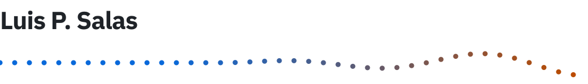

I help organizations make their data governed, their AI explainable, and their teams ready.
Guides, catalogs and standards for building and overseeing AI systems.
Sound art, audio instruments and audio-reactive visuals.